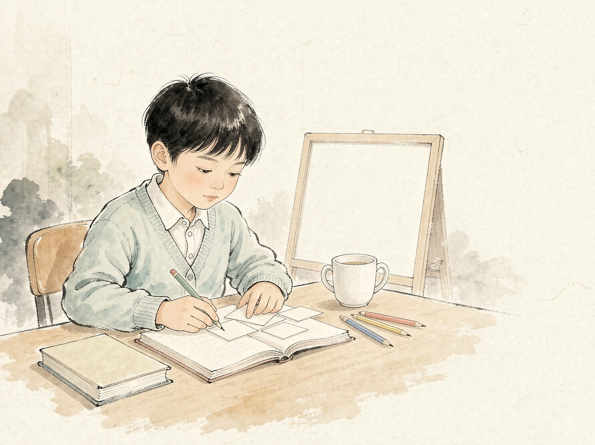

经既明，方读子。撮其要，记其事
六经的圣贤大义，在心里面明白了、立定根基之后，才可以去读诸子百家的典籍。
六经是我们判断取舍的标尺；诸子是不同的思路与方法。
先稳住根本，再广泛参看各家说法，就不容易被各种新奇见解带偏。

读诸子百家，要学会提炼它最核心的道理，同时记住这套学说因何而起、对应什么样的世事。
抓住主干，不纠缠繁杂文字；看清缘起，明白每一种方法都有它适用的场景。
博学不是死记硬背，是抓重点、知来由，懂得灵活选用。

落到心上理解
承接上一课存疑：六经闭环之后，如何向外拓展学问。
这句次第，是心性修学极重要的保护机制。
六经教给我们的，是大中至正的底层标尺：包容而有底线，感化而能裁断，知权变而不离根本。
诸子百家，各从一个侧面切入大道，有的偏治、有的偏术、有的偏出世、有的偏权谋。如果标尺未定，很容易被某一家的长处吸引，拿局部当全体。
对应用功：我们广泛接触各种学问、法门、观点，心中先要保有稳定的中正基准。可以借鉴各家方便，但不把局部之法当成究竟大道。博学多闻，而时时回归本心校准，即是无住。
另有一问：诸子繁多，如何择取、如何读。
“撮其要，记其事”，是一套筛选、消化外来见解的修行功夫。
“撮其要”，对应我们听闻各类法门、观念时，第一重觉察：剥离华丽辞藻，看见它核心主张是什么，这个主张的底层逻辑是什么。
“记其事”，是第二重觉察：这套说法，当初是用来解决什么问题？是对治哪一类弊病而生？换一个处境，还合不合适？
我们常常犯两种毛病：被精妙的道理打动，直接照搬，忽略它本来对应的因缘；或是沉迷各种故事案例，只看热闹，不去提炼背后可以借鉴的法则。
以六经中正为标尺，提取各家要义，看清缘起边界，择善而用，不生执着，即是无住。
闭塞不学，排斥诸子百家；泛览杂记，枝叶繁多，抓不住核心宗旨
诸子有可取之处，可以辅翼大道；读子首在撮要，提纲挈领
- 经为宗主，是大中至正的常道；
- 子为旁参，是各家阐发的权变思路；
- 治学次序：先明经、立标尺，再读子、广见闻；
- 博采众长，前提是不偏离大中至正的本心。
- 撮其要：提炼一家学说核心宗旨，抓主干，弃繁枝；
- 记其事：记住学说缘起、时代背景、所对治的世事弊病；
- 要义为内核，实事为参照，知其所长，亦知其局限；
- 博观诸子，贵在善简择，不盲从、不照搬。
一、勘俗见。多看书、多听观点很好，但先要建立稳定的是非底线，不然很容易被各种说法带偏。学习别人的方法，先要明白它核心思路，还要看清这个方法原本适合什么情况，不能直接全盘照搬。
二、现代对照。好比学习各种方法技巧，先要明白自己的初心与底线，不然手段再多，容易走偏。就像学一个解决问题的技巧，先抓住核心步骤，再了解它适用和不适用的场景。
三、承接常变主线。中正本心恒常不变（常）；诸子各家学说，是应事的方便（可变之相）。中正本心恒常不变（常）；诸子各家义理方案，是对治世事的权宜方便（可变之相）。
四、承接教与学二分。师长讲明经主子宾的次第，属于施教一侧；学人以经衡子，博学而守中，是自主修习。师长示范提纲撮要、对照缘起的读法，属于施教一侧；学人以此法阅子，简择取舍，是自主修习。
承接选择力练习：立本为先，博而有宗。
经既明，方读子。撮其要，记其事
一字义与句读
经既明：六经的教化大义、大中至正的准则，已经了然于心，作为取舍的基准；方读子：而后再研读诸子百家之书，博采各家所长。
上句释义：六经常道大义已经明晓、本心有了取舍宗主，这之后，才适宜研读诸子典籍，参照各家见解，广拓见识，以辅大道。
撮：拣取、提摄；要：一家学说的核心纲领；事：立说的缘起、时弊、施行案例与时代背景。
下句释义：研读诸子典籍，应当提炼各家核心宗旨纲要，同时记下其立论所对应的世事因缘，明了学说兴起的来由、适用边界，善加简择，不盲信照搬。
二命题考辨
（1）经主子宾的次第深意
前面九十六课一路铺排，从四书到六经，《易》《书》《诗》《礼》《春秋》次第讲完，建立一套完整、中和的教化体系。到这一课，治学向外打开一扇门，但设下门槛：门槛就是“经既明”。
六经回答的是：什么是恒久不变的大中至正；诸子回答的是：面对不同时势、不同根器，有哪些路径、方法、视角。
诸子每一家，往往是取道之一偏：或重刑名、或重黄老、或重谋略、或重辩说。单取一偏，也能见效，却不可作为全体大道。所以要先以六经中和之道为秤，称量诸子，取其善、舍其偏。
（2）对照当下现代语境
今人读书最大的问题，就是没有次第。海量知识、各路学说扑面而来，先接触哪一家，就被哪一家绑定。
“经既明，方读子”给出的方案，不是封闭保守，而是建立一套认知免疫系统：先掌握中和、圆融、兼顾刚柔的底层标尺，再去浏览各种专门之学、小众思想，知其长处，同时看见它的局限。
信息时代，人人都在接收各类观点、方法论、思想体系。很多人追逐新理论、新范式，不加甄别，本质就是不会“撮其要，记其事”。
不会撮要，就被概念堆砌裹挟；不会记事，就忽略这套理论当初诞生的土壤，强行移植到完全不同的环境，最后水土不服。
（3）般若范式互参
诸家子书言说，是标月之指。
诸家义理方案，是标月之指。
联动三才五蕴太极空杯模型：中正自性是空杯本具之体；六经是校准的标尺，诸子是多方不同的指月之手。手有万千，月只一个；借多方手指望月，而不执着任意一指为月。中正自性是空杯本具之体；诸子纲要、世事因缘，都是应病与药的方便。知药能治病，而不执着某一方为万病通用之药。
呼应“本乎数”：经一，子多，一主多宾。要为一，事为多，一理应多事。
延伸义理：
《金刚经》：不取于相，读诸子，取其义而不执其言说相。无住生心，取用各家要义而不执理相，随事调整。
《道德经》：知常曰明，经即是“常”，知常之后，方可观万物之变。执古之道，以御今之有，正是察古事、取纲要，用来应对当下。
《坛经》：法门无定，一切方便，皆以明心为归宿，不被法门束缚。随方解缚，一切教法，都是解缚之工具，缚解即不用固守工具。
（4）读子的两层功夫
“经既明”建立标尺，这一句提供读子的操作方法。
诸子之学，多是救世之方。老庄、管晏、申韩、孙吴，各有靶向。
“撮其要”是理上功夫：从长篇文辞里，提炼它的核心主张。不逐句背诵，不被文采迷惑，一眼看见它要解决什么、主张什么。
“记其事”是境上功夫：这套主张，诞生于什么样的乱世、什么样的社会弊病？它在当时如何施行，成效如何，流弊又是什么。
只撮要不记事，容易变成脱离现实的空谈；只记事不撮要，只是一堆零散故事，提炼不出可以借鉴的智慧。二者并举，方是活的学问。
三跨典互参（老庄、般若对照）
· 《道德经》：抱一为天下式，经即是“一”，诸子是天下万式。抱一，而后可观万式。
· 《庄子》：百家往而不返，必不合矣，正是警示执子废经、以偏概全的弊病。
· 串联前文：六经立中和常道为本，而后开启诸子博观之路。经立中正之衡，读子以撮要记事为法，博观而善择。
· 《道德经》少则得，多则惑，撮要便是守少得本，不被繁多言说迷惑。：《道德经》少则得，多则惑，撮要便是守少得本，不被繁多言说迷惑。
· 《庄子》论古之道术，皆有其所对，正是“记其事”，看清每一道术兴起的缘由。：《庄子》论古之道术，皆有其所对，正是“记其事”，看清每一道术兴起的缘由。
四和前面课程的张力
次第链条：……→ 有左氏，有谷梁 → 经既明，方读子 → 撮其要，记其事
呼应“人不学，不知义”：知立本博观、经主子宾之义；知提要察缘、活用权宜之义；
呼应“玉不琢，不成器”：以六经中和打磨自心，广览百家而不偏离中道；以此法打磨自心，博观诸子而不迷于杂说；
呼应“教之道，贵以专”：专守中正，博览诸子而不随异说流转。专守中正，简择百家，取其纲要、明其缘起。
五1. 诸子繁多，以何次序阅读？哪些为先，哪些宜后，哪些当审慎简择？
2. 子书读完之后，如何转入读史，完成整套治学闭环？
3. 诸子简阅之后，转入读史，读史的次第与心法如何承接这一套“撮要记事”？
4. 史、子之间，如何区分边界，避免读史又落入故事杂记？